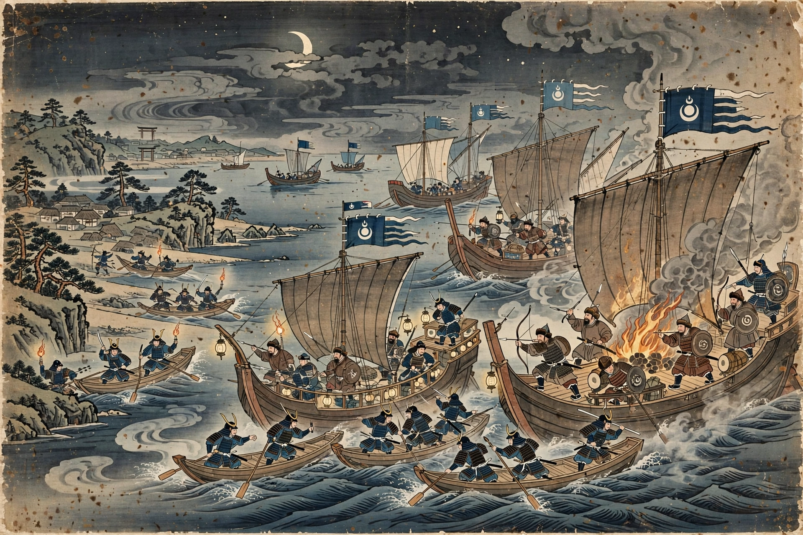

From Wikipedia, the free encyclopedia
| Mongol invasions of Japan | |
| Date | 1274 and 1281 |
|---|---|
| Location | Northern Kyushu, Japan |
| Result | Japanese victory; both invasion fleets destroyed, largely by typhoons |
| Belligerents | Yuan dynasty (Mongol Empire) and Goryeo vs. Kamakura shogunate (Hōjō regency), Japan |
| Commanders | Kublai Khan; (in Japan) Hōjō Tokimune, regent |

The Mongol invasions of Japan (元寇, Genkō) were two major military expeditions launched by Kublai Khan, founder of the Yuan dynasty of China, against the Kamakura shogunate of Japan in 1274 and 1281. Both invasions crossed the Korea Strait and landed in northern Kyushu, and both were defeated — with enormous losses to the invasion fleets — after typhoons devastated the Mongol-led armadas. The storms entered Japanese memory as the kamikaze (神風, "divine wind"), reinforcing a belief in Japan's divine protection that endured into the twentieth century.
After consolidating the Mongol conquest of Korea (Goryeo) and founding the Yuan dynasty, Kublai Khan sent a series of envoys from 1266 demanding that Japan submit as a tributary. The imperial court in Kyoto favoured conciliation, but the shogunate — under the effective rule of the young Hōjō regent Tokimune — repeatedly refused, dismissing or ignoring the embassies. Kublai prepared an invasion fleet based in Korea.
The Battle of Bun'ei: in November 1274 a fleet of some 900 vessels carrying perhaps 40,000 Mongol, Chinese, and Korean troops sailed from Korea, seized Tsushima and Iki islands, and landed in Hakata Bay on Kyushu. The defenders — outnumbered samurai fighting in their individual style against massed archery, phalanx tactics, gunpowder bombs, and poisoned arrows — were driven back to the Mizuki fortress near Dazaifu. That night a storm arose; the invaders re-embarked to ride it out, and roughly a third of the fleet was lost. The expedition withdrew to Korea.
Expecting a return, the shogunate mobilised: coastal defences were organised, prayers commissioned, and a stone defensive wall (Genkō Bōrui), some 20 km long, was built around Hakata Bay. In 1275 and again in 1279 Kublai sent further envoys; the shogunate executed them, making a second invasion certain — especially after the Yuan completed the conquest of the Southern Song in 1279 and gained its fleet.
The Battle of Kōan was the largest amphibious operation attempted anywhere in the world before the modern era: an Eastern Route Army of about 40,000 men from Korea and a much larger Southern Route Army — perhaps 100,000 men — from the former Song territories, converging on Kyushu in the summer of 1281. The stone wall denied the invaders an easy beachhead at Hakata; fighting raged for weeks around Shika Island and the bay while the fleets remained exposed at anchor. On the night of 14–15 August 1281, a great typhoon struck: the Southern Route fleet at Takashima was annihilated, thousands drowning or being killed ashore. The remnants of both fleets withdrew; total Mongol losses may have exceeded half the expedition.
A third invasion was planned but repeatedly postponed and finally abandoned as Yuan fortunes declined. The invasions strained the Kamakura shogunate severely: victories won by defence produced no conquered land with which to reward warriors, and the resulting discontent contributed to the regime's fall in 1333. Underwater archaeology off Takashima Island since the 1980s has recovered anchors, weapons, and hull timbers of the 1281 fleet, confirming the scale of the disaster. The word kamikaze was revived in 1944–45 for Japan's suicide air attacks.